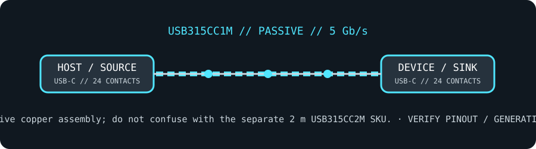

[ CABLE PRODUCT RECORD // STARTECH.COM USB315CC1M ]
StarTech USB315CC1M 1 m USB-C Cable — 5 Gb/s, 60 W
USB-C male-to-male; passive 1 m; USB 5 Gb/s, 3 A / 60 W, DP Alt Mode. This record is SKU-specific; connector shape alone does not establish protocol or capability.

CLASSIFICATION: Data, peripheral, and high-speed cables. Verify exact SKU and the connected host/peripheral requirements.
SKU-specific interface and capability
| Exact product SKU | StarTech.com USB315CC1M |
|---|---|
| Generation and connector pinout | Reversible 24-contact USB Type-C male at both ends. USB data pairs support USB 5 Gb/s (USB 3.2 Gen 1); cable also supports USB Power Delivery to 3 A and DisplayPort Alt Mode as specified for this product. Pinout summary: USB Type-C reversible 24-contact plug; USB 5 Gb/s differential pairs and CC-based orientation/PD negotiation. DP Alt Mode remaps supported high-speed lanes when both endpoints agree. |
| Length and construction | 1 m (3.3 ft), passive copper assembly; do not confuse with the separate 2 m USB315CC2M SKU. |
| Signaling rate | USB 5 Gb/s maximum (USB 3.2 Gen 1). Product listing specifies DisplayPort Alt Mode video up to 4K at 60 Hz, subject to source, display, mode and link configuration. |
| Power limits | Up to 60 W at 3 A (up to 20 V under compatible USB-PD profiles); not a 5 A/100 W or 240 W EPR cable. Actual charge rate is negotiated and bounded by source, sink, cable and profile. |
| Compatibility limits | USB-C-shaped ends do not imply USB4, Thunderbolt, 10/20/40 Gb/s or every video mode. Use only with compatible USB-C data/PD and DP Alt Mode endpoints; this model is described as Thunderbolt compatible but its USB data rating remains 5 Gb/s. |
Compatibility & handling
- Identify both receptacle types, the exact SKU, protocol generation and direction before connecting; similar-looking USB connectors can carry different pinouts and capabilities.
- Maximum rate and power are ceilings, not guarantees: the full host/cable/peripheral chain must support and negotiate the same mode.
- Do not use the lead to defeat a port’s current limit, connect unlike power pinouts, or assume charging/video support from connector fit.
Sources & further reading
- StarTech.com — USB315CC1M official product listingManufacturer model identification, connector configuration and product-specific length/rating.
- StarTech.com — USB 3.0 cable products and connector familiesManufacturer cable-family reference for connector and generation selection.
- USB Implementers Forum — applicable USB specificationOfficial protocol-generation, signaling and connector/power rules; host/device implementation still controls actual operation.